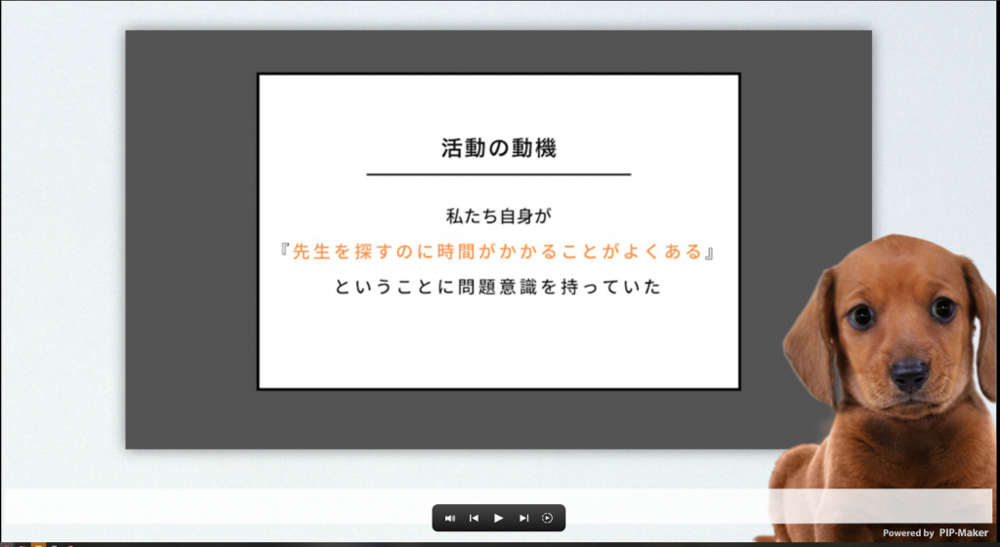
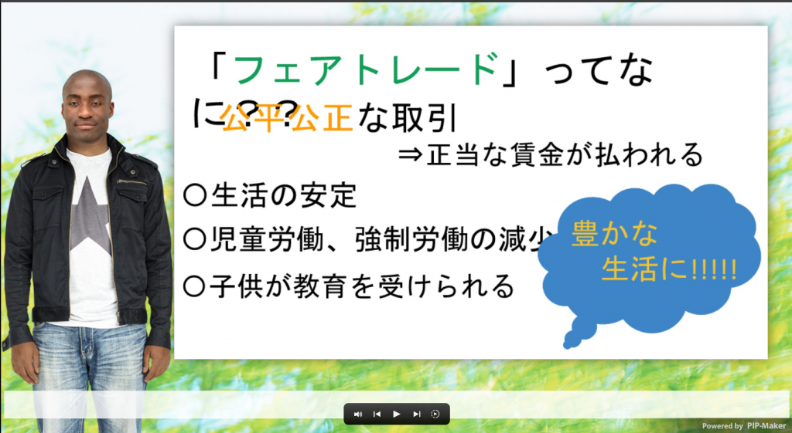

ベネッセSTEAMフェスタ2022では、PowerPointファイルからアバターによる動画を生成できるPIP-Makerを提供している株式会社4COLORS様に協賛いただき、一部の発表を動画にしていただきました。
今回は、武蔵野大学高校の「先生を探すアプリ」と、岡山県立瀬戸高校の「フェアトレードでハッピーに」の2つの動画をご紹介します。以下のリンクより、ご覧ください。
武蔵野大学高校「先生を探すアプリ」
https://www.pip-maker.com/?view=gvw6
岡山県立瀬戸高校「フェアトレードでハッピーに」
https://www.pip-maker.com/?view=2hr2
